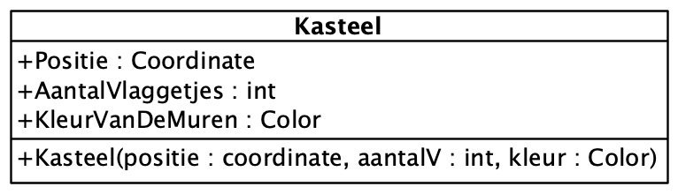

Klassen & Objecten
Waarom klassen gebruiken?
We hebben in .Net toegang tot een aantal elementaire datatypes zoals int, string, double en bool. Strikt genomen kunnen we daarmee, in combinatie met de gekende controlestructuren zoals if en switch, nagenoeg alle denkbare problemen oplossen.
Toch ontstaat tijdens het programmeren al snel de wens om zelf data types te definiëren die eigen zijn aan het probleemdomein. Denk bijvoorbeeld aan het gebruik van coördinaten in een systeem dat informatie op een kaart of raster presenteert. Een coördinaat is eigenlijk een samenstelling van (minstens) twee discrete waarden.
Beschouw onderstaand raster. Het kasteel bevindt zich op (X,Y) positie (2,1).
We kunnen dit in C# registreren als een aantal variabelen, waaronder de X- en Y-waarde van de positie van het kasteel.
int rasterBreedte = 3;
int rasterHoogte = 3;
int positieKasteelX = 2;
int positieKasteelY = 1;Deze aanpak is duidelijk, maar rudimentair.
Beschouw onderstaand raster. De kastelen bevinden zich op posities (0,2), (1,0) en (2,1).
We kunnen ook dit in C# kunnen registreren als een aantal variabelen.
int rasterBreedte = 3;
int rasterHoogte = 3;
int positieKasteel1X = 0;
int positieKasteel1Y = 2;
int positieKasteel2X = 1;
int positieKasteel2Y = 0;
int positieKasteel3X = 2;
int positieKasteel3Y = 1;Hoewel strikt genomen correct, zou het handiger zijn om een eigen datatype te definiëren voor de coördinaten. We kunnen dit doen aan de hand van een klasse.
Een klasse definiëren
Eigenschappen
public class Coordinate { (1)
int X; (2)
int Y; (2)
}| 1 | We geven klassen steeds een duidelijke naam om de semantische rijkdom van onze code te verhogen. Idealiter landen we bij code die zo duidelijk is, dat we ze self-documenting kunnen noemen. |
| 2 | We registreren de eigenschappen die we samen willen brengen. |
Instantiatie & Identiteit
Wanneer we een coordinaat in geheugen willen laden, gaan we een instantie van de klasse Coordinate aanmaken gebruikmakende van het new keyword. Dit zal telkens resulteren in een nieuw object.
Om bij instantiate een object te bekomen met de gewenste inhoud moeten we een passende constructor definiëren.
public class Coordinate {
int X;
int Y;
public Coordinate(int x, int y) {
X = x;
Y = y;
}
}Laten we de nieuwe Coordinate klasse in gebruik nemen.
int rasterBreedte = 3;
int rasterHoogte = 3;
Coordinate positieKasteel1 = new Coordinate(0,2);(1)
Coordinate positieKasteel2 = new Coordinate(1,0);(1)
Coordinate positieKasteel3 = new Coordinate(2,1);(1)| 1 | Elke instantie van Coordinate is een discreet element met een eigen identiteit in het systeemgeheugen. We kunnen deze objecten apart adresseren - in dit geval aan de hand van de variabele namen positieKasteel1, positieKasteel2 en positieKasteel3. |
| De verzameling van alle waarden van de eigenschappen van een object in geheugen vormen de toestand, of state, van dat object. |
Gedrag
Klassen kunnen niet alleen eigenschappen bevatten, maar ook logica. Wanneer logica ondergebracht wordt in een methode in een klasse, zal men dit vaak gedrag van de klasse noemen.
De toepasselijkheid van de term "gedrag" varieert met de mate waarin de klasse verbonden is met alledaagse, tastbare objecten en handelingen. Val dus niet over de terminologie. Men doelt er vooral op dat de logica inherent verbonden moet zijn aan de naam en eigenschappen van de klasse.
Laten we een methode toevoegen aan Coordinate die controleert of deze binnen de grenzen van een raster valt.
public class Coordinate {
int X;
int Y;
public Coordinate(int x, int y) {
X = x;
Y = y;
}
public bool LigtBinnenRasterVan(int breedte, int hoogte) {
return // zwaar denkwerk ...
}
}Encapsulatie en abstractie
Het is steeds aangewezen de inhoud, of toch wijzigingen, van een klasse af te schermen voor de buitenwereld. Dit doen we aan de hand van public/private/protected keywords. Dit is van toepassing op de eigenschappen én het gedrag van een klasse.
In conventionele UML zal het protection level duidelijk gemaakt worden aan de hand van
-
-(private) -
+(public) -
#(protected)
In C# wordt er doorgaans met Properties gewerkt. Properties kunnen verschillende protection levels hebben voor get en set. Dit is niet eenduidig aanwezig in de UML-representatie.
public class Coordinate {
public int X {get; private set;}
public int Y {get; private set;}
public Coordinate(int x, int y) {
X = x;
Y = y;
}
public bool LigtBinnenRasterVan(int breedte, int hoogte) {
return // zwaar denkwerk ...
}
}Ook de logica van LigtBinnenRasterVan() zit geëncapsuleerd in de methode en klasse. De buitenwereld kan de methode aanroepen, maar er wordt abstractie gemaakt van de implementatie.
Door code intelligent op te delen in klassen en methoden, wordt geheel doorgaans gemakkelijker aanpasbaar en dus onderhoudbaar.
| Wanneer men er niet in slaagt op de juiste plekken aan volwaardige abstractie en encapsulatie te doen, zal de aanroepende code te veel rekening moeten houden met de implementatiedetails van de aangeroepen code. Men zegt dan dat de implementatiedetails naar buiten "lekken". Dit heet leaky abstraction. |
Rijkere Klassen
De Coordinate is een zeer primair voorbeeld van een domein-eigen datatype - het betreft immers slechts twee properties van het type int.
Een klasse kan veel meer omvatten en uitdrukken. De kastelen op onderstaand raster zijn een goeie kandidaat.

We bepalen welke properties nuttig zouden kunnen zijn om de details van het kasteel uit te drukken in code. De graad van detail, of granulariteit, hangt af van het problemen dat we willen oplossen. Laten we het hier niet te ver zoeken.
We kunnen ook beroep doen op klassen die kant-en-klaar aangeleverd worden door een Framework, zoals Color in dit geval.
public class Kasteel {
public int X {get; private set;}
public int Y {get; private set;}
public int AantalVlaggetjes {get; private set;}
public Color KleurVanDeMuren {get; private set;}
public Kasteel(...) // constructor ...
}Een zelf gedefinieerde klasse kan ook als datatype gebruikt worden. We kunnen dus beroep doen op Coordinate.
public class Kasteel {
public Coordinate Positie {get; private set;}
public int AantalVlaggetjes {get; private set;}
public Color KleurVanDeMuren {get; private set;}
public Kasteel(...) // constructor ...
}
We kunnen de originele code nu herschrijven met nog rijkere semantiek.
int rasterBreedte = 3;
int rasterHoogte = 3;
int positieKasteel1X = 0;
int positieKasteel1Y = 2;
int positieKasteel2X = 1;
int positieKasteel2Y = 0;
int positieKasteel3X = 2;
int positieKasteel3Y = 1;int rasterBreedte = 3;
int rasterHoogte = 3;
Kasteel kasteel1 = new Kasteel(...);
Kasteel kasteel2 = new Kasteel(...);
Kasteel kasteel3 = new Kasteel(...);We kunnen ook een klasse definiëren voor het raster.
public class Raster {
public int Breedte {get; private set;}
public int Hoogte {get; private set;}
public Raster(int b, int h) {
Breedte = b;
Hoogte = h;
}
}Wanneer we deze klasse in gebruik nemen, wordt de code nog duidelijker.
Raster raster = new Raster(3,3);
Kasteel kasteel1 = new Kasteel(...);
Kasteel kasteel2 = new Kasteel(...);
Kasteel kasteel3 = new Kasteel(...);| Wanneer we software bouwen, investeren we tijd om het probleemdomein goed te begrijpen. Dit stelt ons in staat klassen te definiëren die nuttig, duidelijk en handig zijn. |
We voelen aan dat het geheel in de toekomst nog verrijkt kan worden, zeker wat betreft gedrag, zoals bijvoorbeeld raster.VoegKasteelToe(kasteel1).
Oefening
Ontwerp UML en schrijf de overeenkomstige C# code voor de volgende concepten. Bedenk steeds een sprekende naam voor de klasse. Bepaal de eigenschappen om de - door jou - gewenste graad van complexiteit en eigenheid van een object uit te drukken.
| Deze keer vertrekken we van, door AI gegenereerde, onnozele prentjes. Naarmate de complexiteit van de materie in de lessen stijgt, wordt begrijpend lezen steeds belangrijker. |
- Vogelhuisjes
-
- Fietsjes
-
- Griezelig Vriendelijke Autootjes
-